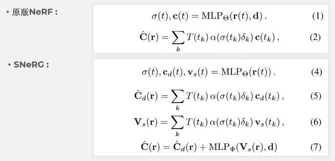
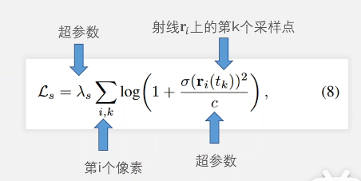
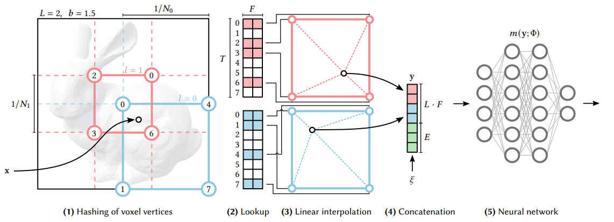
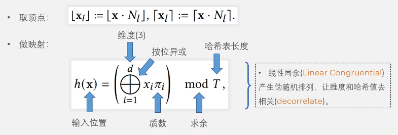
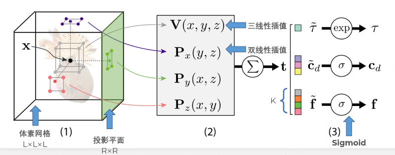
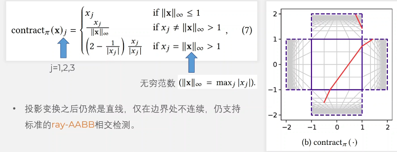
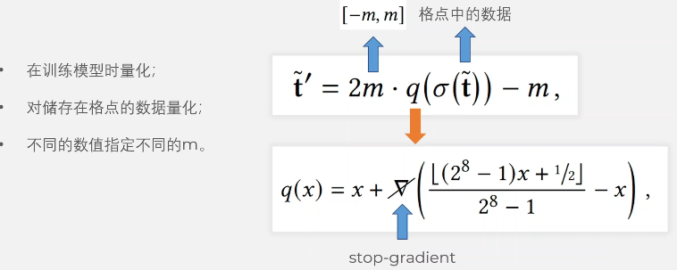

NeRF baking指的是生成加速的数据结构的模型的过程。
SNeRG (2021)
key idea：把NeRF模型bake到一个稀疏网格模型Sparse Neural Radiance Grid，从而加速渲染
Defered NeRF Model
- 基于JAXNeRF模型，采样到的值被存储在一个稀疏3D体素网格里，在渲染时查询
- 输出视角无关的diffuse color，视角相关的体密度，specular feature；前两个用来构建$\alpha$-composite模型，后两个和视角$d$结合，用一个很小的神经网络解码得到specular color，这就是所谓的“延迟”——在原先的NeRF中，视角$d$是直接输入MLP模型的，这样对一条采样射线只用做一次解码
SNeRG vs. vanilla NeRF

- 公式(5) (6)可以被预计算，储存在一个稀疏的体素网格里，在训练之后进行（也就是bake），渲染时只需要查询体素网格和(7)中的小MLP。
- 对不透明度进行正则化。加了一个柯西损失项，让空间中的不透明度分布变得稀疏，即让透明的地方更透明，不透明的地方更不透明。

- 原版NeRF进行了两阶段（coarse to fine）采样，柯西损失只应用于coarse阶段
- 对外点（high density）鲁棒，也就是说让一条射线上高体密度的地方分布越稀疏越好
数据结构
Indirect Grids：表明空间中哪些位置包含了模型，空的地方什么都不存，其他的会存储一个指向macroblock指针
Macroblocks：存储模型信息（diffuse color, volume density, specular feature）
渲染
- 沿射线查询非空的macroblocks
- 在macroblocks的3D texture map中按采样位置进行三线性插值，只采样体密度非零的值
- 不透明度饱和时终止采样射线
- 对射线上的采样值进行$\alpha$-compositing
- 用MLP和视角方向一起解码，获得像素值
Baking
- 将空间划分成$N^3$的体素网格
- 根据不透明度、体素能见度剔除空体素网格
- 高斯采样后求平均，实现anti-aliasing
压缩
SNeRG实际上是用空间换时间，但是也不希望占用太多空间。
压缩用到的方法：
- 8 bits量化
- 将indirect grids切片压缩为PNG
- 将3D texture maps压缩成PNG/JPEG/H264
为什么有损压缩对结果影响不大？原因是查询到的specular features还会和视角一起输入到MLP中，这个MLP会对颜色的损失做补偿，优化它利用的是稀疏体素网格的渲染loss。
缺陷
- 反射或透明的部分太复杂的时候，建模不准确，因为一些视角依赖效果是逐像素渲染而不是逐采样点渲染
- 对大场景没有适应性
Instant-NGP (2022)
key idea: hash encoding，将输入坐标编码为多尺度哈希表索引的可训练的特征向量，用较小的MLP实现训练和渲染的加速
Overview
在不同的分辨率下，查询当前像素所在的体素网格，进行插值得到特征向量，其中，对周边几个点的特征向量的查询需要用哈希表索引。将不同分辨率得到的特征向量以及视角拼接起来，作为MLP的输入，解码得到渲染结果。

多分辨率哈希网格
- 多层哈希网格，各层之间独立，网格顶点存储特征向量
- 按几何级数设置网格分辨率（等比数列）

其中质数$\pi_1=1$，$\pi_2,\pi_3$是很大的质数。
线性同余的好处：
- 让每个坐标轴上的值和哈希值去相关
- 减少哈希碰撞
本文采用特征向量长度$F=2$，层数$L=16$。
MERF (2023)
结合低分辨率的稀疏特征网格和3个高分辨率2D特征平面减少内存消耗。
场景表示
$L^3$体素网格：实际上采用$L=512$，对某个点$x$，取周边8个顶点，通过三线性插值得到特征向量$V(x,y,z)$
$R^2$平面：实际上采用$R=2048$，把$x$投影到三个平面上，在每个平面上取周边四个顶点做双线性插值，得到3个特征向量$P_x,P_y,P_z$
将上面的特征向量进行求和，得到一个长度是4+K的特征向量$t$，其中体密度$\tau$占1个，视角无关的颜色占3个，视角相关的特征向量占K（实际操作中取4）个。注意是先进行插值再进行非线性映射（来自DVGO，显著提升网格表达能力），$\sigma$指sigmoid函数。

无边界场景映射
Mip-NeRF 360的球形收缩函数将直线映射为曲线，让跳过空体素的计算消耗更高（很难进行ray-AABB计算）。

训练时模拟查询格点、插值等网格采样过程；渲染时采用传统的跳过空体素的方法。
训练模型时量化：
